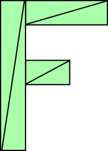

Avant de passer à la 3D, restons encore un peu en 2D. Soyez patients s’il vous plaît. Cet article peut sembler extrêmement évident pour certains, mais je construis progressivement une démonstration sur plusieurs articles.
Cet article fait partie d’une série commençant par Les bases de WebGL. Si vous ne les avez pas lus, je vous suggère de lire au moins le premier, puis de revenir ici.
La translation est un terme mathématique sophistiqué qui signifie simplement “déplacer”
quelque chose. Je suppose que déplacer une phrase de l’anglais au japonais conviendrait
également, mais dans notre cas, nous parlons de déplacer de la géométrie. En utilisant
le code d’exemple que nous avions à la fin du premier article,
vous pourriez facilement translater notre rectangle simplement en changeant les valeurs
passées à setRectangle, n’est-ce pas ? Voici un exemple basé sur notre
exemple précédent.
+ // Créons d'abord quelques variables
+ // pour stocker la translation, la largeur et la hauteur du rectangle
+ var translation = [0, 0];
+ var width = 100;
+ var height = 30;
+ var color = [Math.random(), Math.random(), Math.random(), 1];
+ // Ensuite créons une fonction pour
+ // tout redessiner. Nous pourrons appeler cette
+ // fonction après avoir mis à jour la translation.
+ // Dessiner la scène.
+ function drawScene() {
webglUtils.resizeCanvasToDisplaySize(gl.canvas);
// Indique à WebGL comment convertir de l'espace de découpage en pixels
gl.viewport(0, 0, gl.canvas.width, gl.canvas.height);
// Efface le canvas
gl.clearColor(0, 0, 0, 0);
gl.clear(gl.COLOR_BUFFER_BIT | gl.DEPTH_BUFFER_BIT);
// Indique d'utiliser notre programme (paire de shaders)
gl.useProgram(program);
// Lie l'ensemble attribut/tampon que nous voulons.
gl.bindVertexArray(vao);
// Passe la résolution du canvas pour pouvoir convertir
// des pixels vers l'espace de découpage dans le shader
gl.uniform2f(resolutionUniformLocation, gl.canvas.width, gl.canvas.height);
// Met à jour le tampon de position avec les positions du rectangle
+ gl.bindBuffer(gl.ARRAY_BUFFER, positionBuffer);
* setRectangle(gl, translation[0], translation[1], width, height);
// Définit la couleur.
gl.uniform4fv(colorLocation, color);
// Dessine le rectangle.
var primitiveType = gl.TRIANGLES;
var offset = 0;
var count = 6;
gl.drawArrays(primitiveType, offset, count);
+ }
Dans l’exemple ci-dessous, j’ai ajouté quelques curseurs qui mettront à jour
translation[0] et translation[1] et appelleront drawScene à chaque changement.
Faites glisser les curseurs pour translater le rectangle.
Jusqu’ici tout va bien. Mais maintenant imaginons que nous voulions faire la même chose avec une forme plus compliquée.
Disons que nous voulons dessiner un ‘F’ constitué de 6 triangles comme ceci.

Eh bien, en suivant notre code actuel, nous devrions modifier setRectangle
pour quelque chose qui ressemble plutôt à ceci.
// Remplit le tampon ARRAY_BUFFER actuel avec les valeurs qui définissent la lettre 'F'.
function setGeometry(gl, x, y) {
var width = 100;
var height = 150;
var thickness = 30;
gl.bufferData(
gl.ARRAY_BUFFER,
new Float32Array([
// colonne gauche
x, y,
x + thickness, y,
x, y + height,
x, y + height,
x + thickness, y,
x + thickness, y + height,
// barre supérieure
x + thickness, y,
x + width, y,
x + thickness, y + thickness,
x + thickness, y + thickness,
x + width, y,
x + width, y + thickness,
// barre du milieu
x + thickness, y + thickness * 2,
x + width * 2 / 3, y + thickness * 2,
x + thickness, y + thickness * 3,
x + thickness, y + thickness * 3,
x + width * 2 / 3, y + thickness * 2,
x + width * 2 / 3, y + thickness * 3]),
gl.STATIC_DRAW);
}
Vous pouvez probablement voir que cela ne passera pas bien à l’échelle. Si nous voulons dessiner une géométrie très complexe avec des centaines ou des milliers de lignes, nous devrions écrire du code assez complexe. De plus, chaque fois que nous dessinons, JavaScript doit mettre à jour tous les points.
Il existe une façon plus simple. Il suffit de charger la géométrie et d’effectuer la translation dans le shader.
Voici le nouveau shader
#version 300 es
// un attribut est une entrée (in) pour un shader de sommet.
// Il recevra des données depuis un tampon
in vec2 a_position;
// Utilisé pour passer la résolution du canvas
uniform vec2 u_resolution;
+// translation à ajouter à la position
+uniform vec2 u_translation;
// tous les shaders ont une fonction main
void main() {
+ // Ajoute la translation
+ vec2 position = a_position + u_translation;
// convertit la position de pixels vers 0.0 à 1.0
* vec2 zeroToOne = position / u_resolution;
// convertit de 0->1 à 0->2
vec2 zeroToTwo = zeroToOne * 2.0;
// convertit de 0->2 à -1->+1 (espace de découpage)
vec2 clipSpace = zeroToTwo - 1.0;
gl_Position = vec4(clipSpace * vec2(1, -1), 0, 1);
}
et nous allons restructurer un peu le code. D’une part, nous n’avons besoin de définir la géométrie qu’une seule fois.
// Remplit le tampon ARRAY_BUFFER actuel
// avec les valeurs qui définissent la lettre 'F'.
function setGeometry(gl) {
gl.bufferData(
gl.ARRAY_BUFFER,
new Float32Array([
// colonne gauche
0, 0,
30, 0,
0, 150,
0, 150,
30, 0,
30, 150,
// barre supérieure
30, 0,
100, 0,
30, 30,
30, 30,
100, 0,
100, 30,
// barre du milieu
30, 60,
67, 60,
30, 90,
30, 90,
67, 60,
67, 90]),
gl.STATIC_DRAW);
}
Ensuite, nous devons simplement mettre à jour u_translation avant de dessiner avec la
translation que nous souhaitons.
...
+ var translationLocation = gl.getUniformLocation(
+ program, "u_translation");
...
+ // Définit la géométrie.
+ setGeometry(gl);
...
// Dessine la scène.
function drawScene() {
webglUtils.resizeCanvasToDisplaySize(gl.canvas);
// Indique à WebGL comment convertir de l'espace de découpage en pixels
gl.viewport(0, 0, gl.canvas.width, gl.canvas.height);
// Indique d'utiliser notre programme (paire de shaders)
gl.useProgram(program);
// Lie l'ensemble attribut/tampon que nous voulons.
gl.bindVertexArray(vao);
// Passe la résolution du canvas pour pouvoir convertir
// des pixels vers l'espace de découpage dans le shader
gl.uniform2f(resolutionUniformLocation, gl.canvas.width, gl.canvas.height);
// Définit la couleur.
gl.uniform4fv(colorLocation, color);
+ // Définit la translation.
+ gl.uniform2fv(translationLocation, translation);
// Dessine le rectangle.
var primitiveType = gl.TRIANGLES;
var offset = 0;
* var count = 18;
gl.drawArrays(primitiveType, offset, count);
}
Notez que setGeometry n’est appelé qu’une seule fois. Il n’est plus à l’intérieur de drawScene.
Et voici cet exemple. Encore une fois, faites glisser les curseurs pour mettre à jour la translation.
Maintenant, quand nous dessinons, WebGL fait pratiquement tout. Tout ce que nous faisons, c’est définir une translation et lui demander de dessiner. Même si notre géométrie avait des dizaines de milliers de points, le code principal resterait le même.
Si vous le souhaitez, vous pouvez comparer la version qui utilise le JavaScript complexe ci-dessus pour mettre à jour tous les points.
J’espère que cet exemple n’était pas trop évident. Dans le prochain article, nous passerons à la rotation.